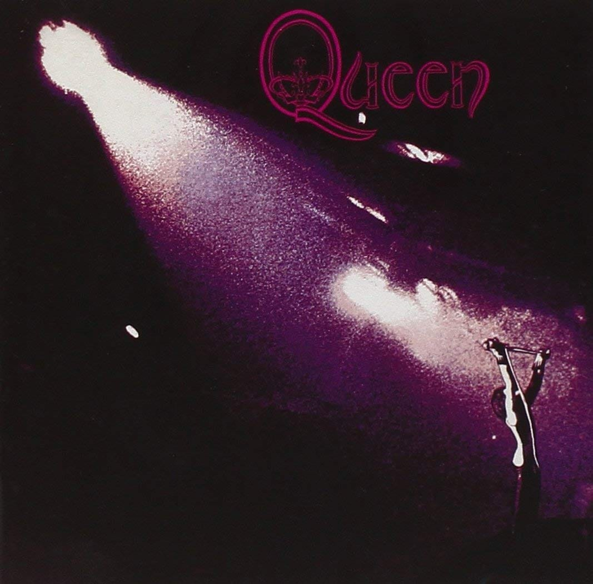

Freddy Mercury - Brian May - Roger Taylor - John Deacon
La band, conosciuta come una tra le più importanti della scena musicale internazionale, ha venduto circa 300
milioni di dischi in tutto il mondo.
I Queen sono un gruppo musicale rock britannico, che si formò a Londra nel 1970 grazie all'incontro tra il
cantante e pianista Freddie Mercury, il chitarrista Brian May e il batterista Roger Taylor; la formazione
storica si completò poi nel 1971, con l'ingresso del bassista John Deacon.

Cover del primo album dei Queen (1973)
Nel 1964 il chitarrista Brian May fondò insieme a Tim Staffell la band 1984; il gruppo, composto da
altri quattro membri, ebbe un buon successo, arrivando nel 1967 ad aprire un concerto di Jimi Hendrix e a
partecipare a un grande concerto di Natale con T. Rex e Pink Floyd. Dopo lo scioglimento della band nel
1968, May e Staffell decisero di riformarne un'altra, inserendo così nella bacheca dell'Imperial College,
dove studiavano, un annuncio: "Cercasi batterista stile Ginger Baker/Mitch Mitchell". A questo rispose
Roger Taylor, che convinse con la propria professionalità May e Staffell ed entrò a far parte degli
Smile. La prima apparizione pubblica della nuova band avvenne il 26 ottobre 1968, quando aprì un
concerto dei Pink Floyd; nel maggio 1969, il gruppo firma un contratto con la Mercury Records per la
pubblicazione di un singolo.
In questo periodo Staffell presentò ai compagni Farrokh Bulsara detto "Freddie", che faceva parte di una
blues band, gli Ibex (poi Wreckage), dispensando comunque numerosi consigli agli Smile su come suonare e
presentarsi in pubblico. Il singolo Earth, registrato ai Trident Studios, venne pubblicato negli Stati
Uniti, senza tuttavia ottenere il successo sperato; per questo motivo Staffell decise di abbandonare i
due compagni, entrando a far parte degli Humpy Bong.
I rimanenti membri degli Smile, incoraggiati da Bulsara, che si era aggregato ai due, continuarono il loro
lavoro e, nell'aprile 1970, cambiarono il nome della band in "Queen", cominciando a cercare un bassista;
il 27 giugno 1970, i tre, completati da Mike Grose, si esibirono per la prima volta in pubblico, a Truro, in
un concerto di beneficenza per la Croce rossa. Il nome "Queen" venne pensato da Bulsara, che cominciò
inoltre a farsi chiamare "Mercury"; "Queen è un nome corto, semplice e facile da ricordare ed esprime poi
quello che vogliamo essere, maestosi e regali. Il glam è parte di noi e vogliamo essere dandy". Lo stile
adottato dai tre comprendeva abiti di seta in bianco e nero, bracciali, anelli e collari. Dopo poco tempo
Grose abbandonò la band, così come fece il suo sostituto Barry Mitchell. Dopo aver provato Doug Ewood
Bogie, Taylor e May incontrarono nel gennaio 1971 John Deacon, proponendogli il posto di bassista dei Queen;
a fine febbraio Deacon, per la sua tranquillità e la sua conoscenza dell'elettronica, diventò il quarto
membro del gruppo.
Scopri di più